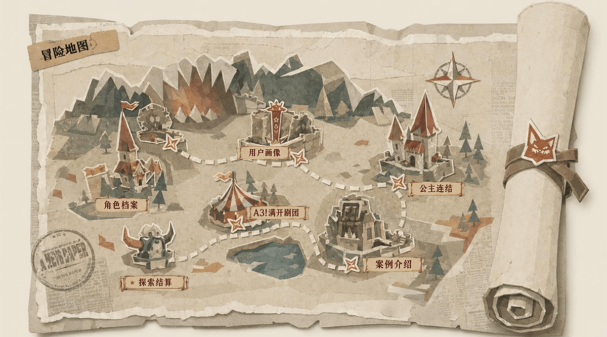
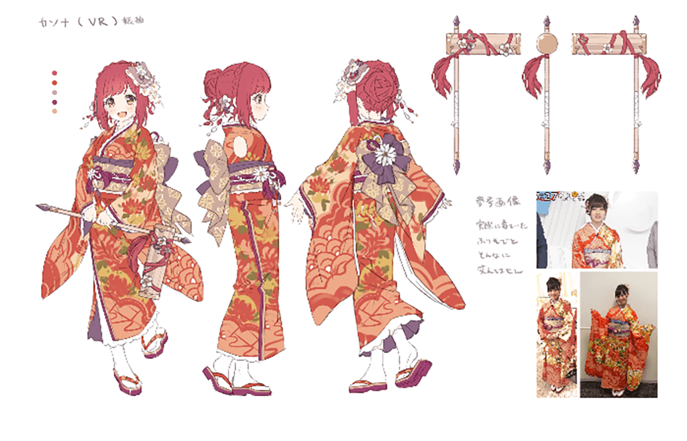
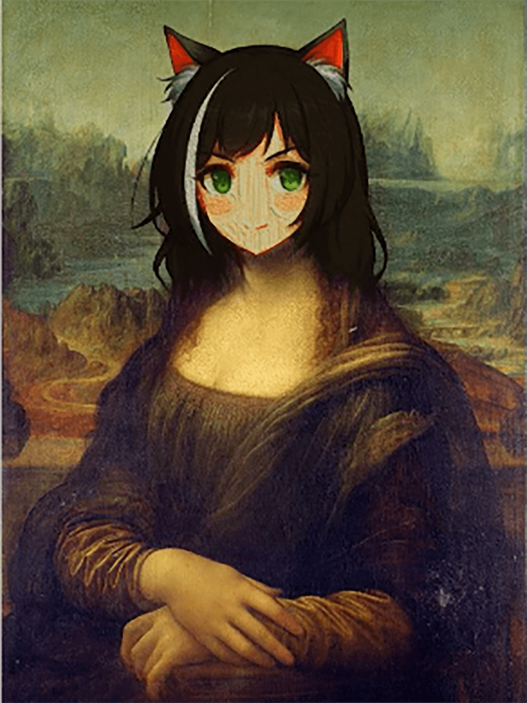
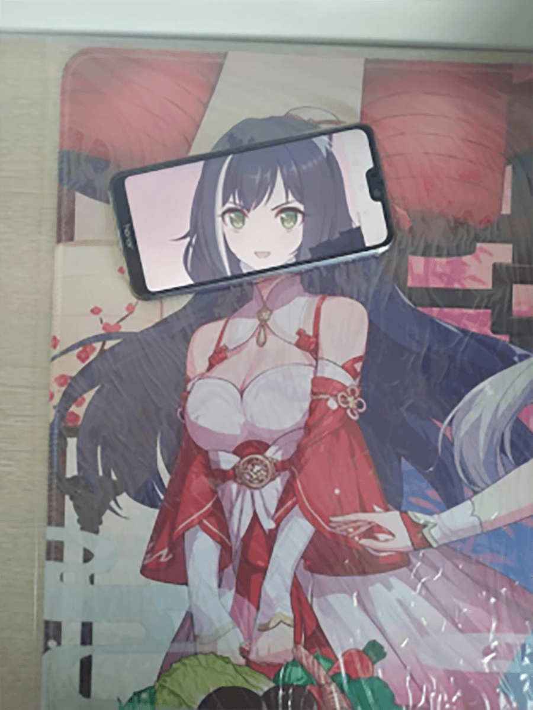
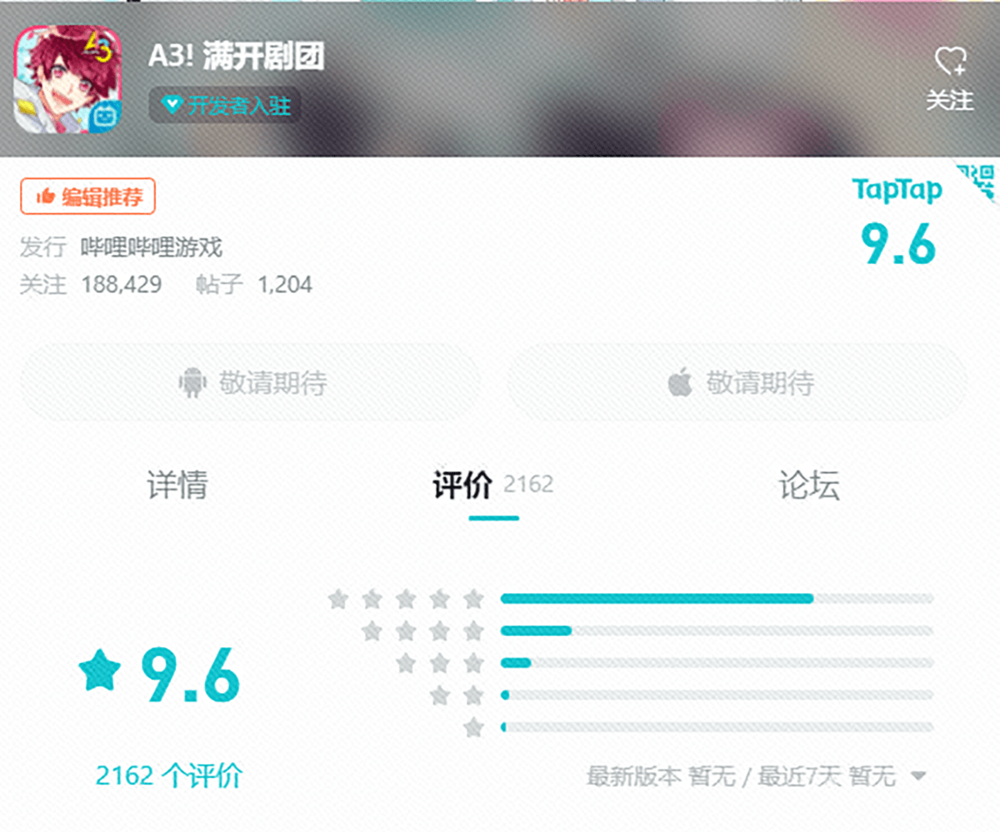
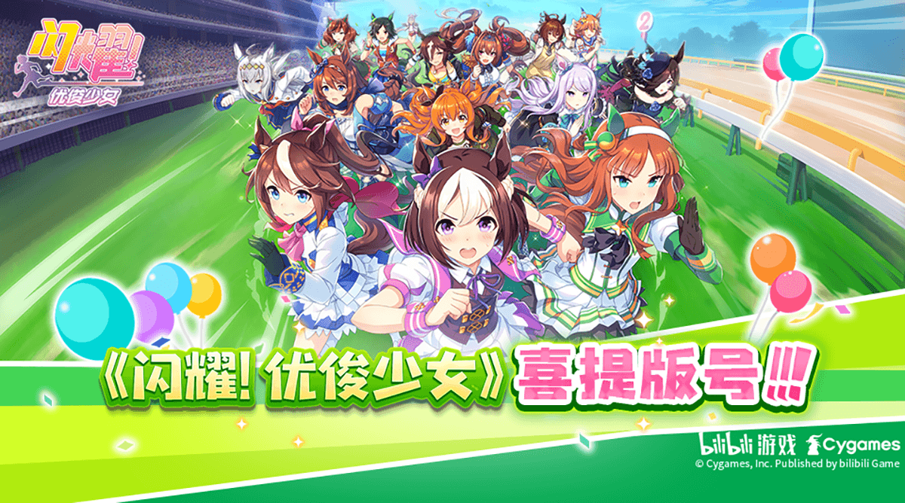

B站
项目经历 2021~2025
晁芳蒂
B站 · 项目经历
Work Experience
工作概述
负责《公主连结》《A3!满开剧团》《赛马娘》《IDOLiSH7》等多款二次元及女性向游戏的发行运营，涵盖版本规划、本地化调优、商业化、用户运营等工作，主导从0到1产品上线及多个版本从规划到落地的全流程，运营期间无P0级事故。
2021.06-2025.01
公主连结国服（二次元回合制卡牌）主运营
2021.06-2022.04
A3!满开剧团国服（女性向卡牌）用户运营、本地化
2021.06-2023.09
赛马娘国服（二次元Roguelike式模拟养成）版署期版本介入至上线

公主连结
Monetization Operations
商业化

一起来探险吧~
- ARPU、付费率、DAU等数据上线后均获提升，其中破冰礼包购买率提升至20%；通行证总营收800w+，活动期间DAU稳定在40w+；春节礼包销量同比增长70%，总营收同比增长120%+
付费分层拆分
- 针对大/中/小R的付费行为和付费关注点差异大，原有礼包"一刀切"导致中小R转化率低的问题，结合用户画像与游戏底层设计，精细化分层用户，制定新用户/活跃用户/高价值用户的差异化付费策略，实现各层用户流水增长目标，中小R付费渗透率明显提升
商业化模型搭建
- 针对缺乏系统性付费框架，付费内容零散且缺乏迭代节奏的问题，聚焦卡池、月卡、通行证、限时礼包等核心付费模块，设计差异化付费内容，建立"随版本迭代填充"的常态化机制，6种新付费模式上线，付费渗透率与ARPU得到提升
定价策略&资源投放
- 针对多档位礼包之间缺乏价格梯度设计，用户选择困难且高档位转化率低的问题，采取多档位坡度设计，设置主推档位和比价锚点档位；明确资源分级标准，保证付费体验与保值周期；主推档位购买率提升，用户对售卖资源有明确价值感知，付费体验正向反馈
商业化活动策划
- 针对纯数值向礼包难以打动女性向/二次元用户，付费场景与用户情感脱节的问题，结合角色卡池与版本剧情进行情感化包装，围绕角色生日、节日庆典、大小月卡等，将付费场景与用户情感和数值养成绑定，提供"为角色庆贺"式的自然付费机会，春节礼包销量同比+70%，活动期间用户自发传播意愿显著提升
开发跟进&售前准备
- 前置对齐UE交互设计并跟进开发节点；盘点风险点，配合社区运营提前带节奏，准备福利内容做口碑对冲，商业化内容上线均未引发重大负面舆情，口碑与流水兼顾
复盘与优化
- 跟踪商业化数据表现和用户舆情反馈，分析用户付费转化卡点，针对转化漏斗的流失环节，输出复盘报告与调优方案，调整档位展示顺序和填充物可视化方案，优化玩家购买体验
Localization Tuning
本地化调优
版本内容调整
- 对日服版本内容进行切割，跨版本提前实装系统便利向优化
- 活动难度和奖励调整，减少重复刷取，为玩家减负
- 细化排行榜档位，提高竞争感，刺激玩家活跃
- 针对游戏养成线趋于饱和、资源投放偏多等问题，推动国服版本排期2倍加速、加深养成线（属性机制、技能树）等落地，均获数据提升
活动排期优化
- 更新维护节奏规律化，将日服散乱的维护进行更新内容合并，调整成固定的2周1次维护，来提高玩家体验
- 根据节假日和周年节点，调整卡池顺序，保证卡池强度在线，拉动流水和DAU
- 活动排期2倍加速，通过压缩活动和卡池周期，以及补偿新增养成材料掉落翻倍、登录奖励等，来尽快追赶日服进度
国服专属内容制作
- 专属角色：推进桥本环奈国服原创角色实装，触达其粉丝及三次元圈层泛用户；
- 专属商业化：补充更多的付费模式，BP、权益卡池、自选礼包、首充双倍等；
- 专属活动：新增主题活动、回流活动、材料掉落翻倍等，提高DAU

Community Operation
社区运营
官方账号- 作为核心运营统筹官方账号的内容策略与排期，提炼游戏卖点和版本亮点，搭建社区内容框架，分为官方资讯/攻略、福利活动、UGC创作、衍生内容四类，确保每个版本有充足物料释放
图文内容产出- 负责产品微博、B站、公众号等官方阵地的图文内容产出，与美术、技术等部门沟通图、文、视频、H5等各类素材的需求和包装方案，跟进落地验收与上线后舆情风向
二创- 捕捉用户流行梗并转化为官方内容创意，利用玩家自创"猫猫头"梗（凯露换头表情包），官方下场认领、发起二创征集、融入版本宣发，全网"接头霸王"破圈传播，成为游戏社区最出圈表情包


Version Quality
版本质量把控
发行规划
- 负责22年~25年游戏发行计划制定，与日方CP和组内研发对齐大版本目标，制作版本需求并沟通确认优先级，输出版本内容排期，提交日方监修，完成最终发行计划表
- 根据国服玩家特点，规划落地卡池开放顺序和活动节奏，制定活动排期并完成监修
- 成果：完成连续4年大版本计划制定和活动排期，并推动版本稳定更新线上
版本质量把控
- 搭建包含研发、运营、市场各部门提需流程，统筹与落地各方需求，完善版本交付-验收-提审流程
- 跟进版更节点落地项，确保开发、测试按时完成；对接包体和SDK更新需求，确保各渠道版本上架按时完成
- 参与版更和日常维护内容验收，跟进bug修复、发布线上，确保线上内容正常推进
- 成果：完成7个线上大版本的稳定落地，且线上无P0级及以上事故
Incident & Public Opinion Management
事故处理&舆情管理
- 前置建立舆情分级分类机制与事故通用补偿模版，针对潜在风险（版本更新、商业化变动等）提前制定补偿模板与应对话术，提升反馈处理效率
- 作为接口人整合客服、社群运营信息，敏捷响应客诉，监控线上环境，确保第一时间发现线上bug并上报
- 日常通过监控社群关键词，提前预警可能引发负面讨论的内容，并与研发、客服、法务等部门建立快速响应链路，确保问题在萌芽阶段得到控制
- 负责产品线上事故的评估，跟进处理方案制定、bug修复、补偿发放与后续舆情安抚
Cross-Functional Collaboration
部门协作
- 负责产品对研发、市场、商务、渠道等部门对接，协力落地重大版本战役的版本提审&上架、宣发资源审核、落地验收、公告撰写、补偿发放等
- 负责技术业务落地对接，协助研发和中台完成游戏平台基建配置与迭代
- 推进并完成AI客服接入、GM后台搭建、SDK更新等；补偿发放等高危操作至今0操作事故

A3!满开剧团
User Operations
用户运营
- 负责产品微博、B站、公众号等官方阵地的图文内容产出与玩家互动-引导舆情，维护游戏口碑
- 搭建官方核心用户群，并与大R进行1v1建联，通过玩家社群与舆情工具，及时掌握用户痛点与产品异常，快速响应并处理游戏事件
- 通过道具激励、创作扶持、官方身份认同等方式培养种子用户，形成稳定的同人图文与攻略产出体系，沉淀可主动为产品发声的创作者生态
Product Optimization
产品优化建议
- 追踪玩家游戏体验，整理玩家反馈与用研数据结论，输出产品优化方案，并跟进方案落地
- 截止产品下线仍保持Tap 9.6高分（满分10分），游戏口碑好，玩家满意度高

Monetization Design
商业化设计
- 负责游戏内付费模式的迭代和内容设计，增加国服特供卡池，设计新手应援礼包、特惠月卡、周年庆特惠档位，拉动ARPU提升130%+；制定新资源的下放规划，对已有商品的内容物进行迭代

赛马娘
Game Publication License Application
游戏版号申请
- 负责产品上线前版号申请，包括版署材料制作、合规风险修正、国服本地化监修等，跟进版署推进流程
- 经历版号寒冬后，历时2年拿到版号并完成上线

本地化资源筹备
- 完成OB版本的文本资源整理和校对，注重文案的情感细节，突出角色设定和剧情走向中对玩家态度的变化
产品OB跟进
- 提交OB版本需求，跟进版本交付流程，协助QA进行开服版本内容测试，确保落地内容符合预期，并协助各渠道版本上架
- 产品上线后高强度巡视社区，及时上报线上bug和处理客诉，确保上线后版本平稳运营
—— 因为热爱，所以全力以赴 ——
晁芳蒂
B站 · 项目经历